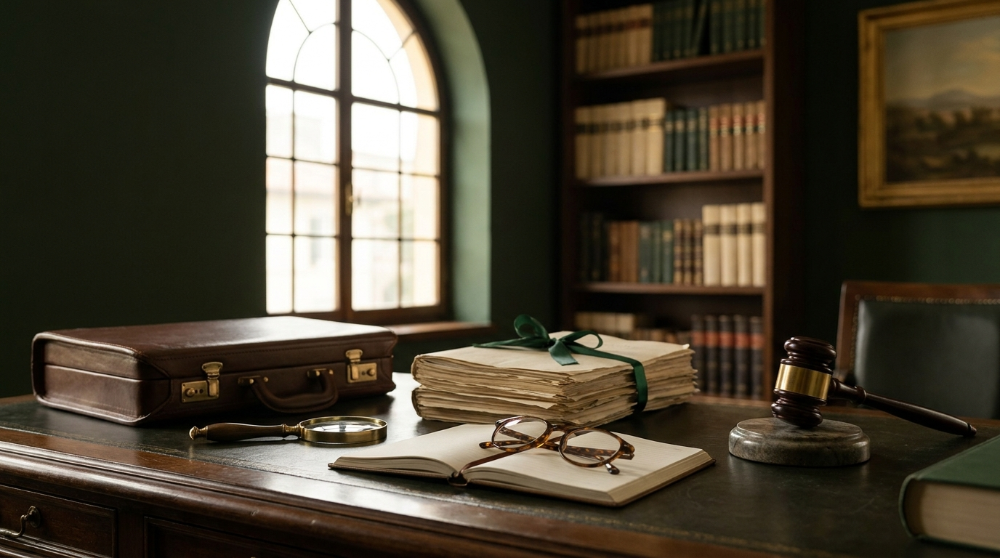

Investigatore privato sul lavoratore: i limiti del controllo datoriale
Il datore di lavoro può ingaggiare un investigatore privato per sorvegliare il dipendente? La Corte di Cassazione, Sezione Lavoro, traccia un confine netto: l'investigazione è ammessa solo per accertare illeciti, mai per verificare il rendimento o il modo in cui viene resa la prestazione. Quel controllo resta affidato esclusivamente all'organizzazione interna dell'impresa.

Il caso e il principio affermato
La domanda è ricorrente: il datore di lavoro che sospetta del proprio dipendente può rivolgersi a un'agenzia investigativa per farlo pedinare e documentarne i comportamenti? La risposta della Corte di Cassazione, Sezione Lavoro, è articolata: sì, ma entro confini precisi.
L'investigatore privato può intervenire soltanto per accertare condotte illecite del lavoratore, cioè comportamenti che esulano dalla normale esecuzione del rapporto e che possono integrare un danno per l'azienda o una violazione di obblighi specifici. Non può invece essere impiegato per verificare come il dipendente svolge la propria attività lavorativa: la qualità, la quantità e le modalità della prestazione restano materia del controllo interno.
Inquadramento normativo
Il riferimento è lo Statuto dei Lavoratori (Legge n. 300/1970). Gli articoli 2 e 3 disciplinano l'uso delle guardie giurate e del personale di vigilanza, stabilendo che questi non possono essere adibiti al controllo dell'attività lavorativa in senso stretto.
Da questa cornice la giurisprudenza ha ricavato un principio costante: il cosiddetto "controllo difensivo" è legittimo quando è diretto a tutelare il patrimonio aziendale o ad accertare illeciti, non quando si sostituisce alla normale vigilanza sull'adempimento. In altre parole, l'investigatore non può diventare un sorvegliante mascherato della prestazione.
La distinzione è sottile ma decisiva. Verificare se un dipendente, durante l'orario, svolge attività concorrenziale, simula una malattia o sottrae beni aziendali rientra nell'accertamento dell'illecito. Controllare se lavora con la dovuta diligenza, se rispetta i ritmi produttivi o se è efficiente è invece controllo della prestazione, riservato alla struttura interna e ai suoi strumenti.
Implicazioni pratiche
Per il datore di lavoro questo significa che l'indagine investigativa deve poggiare su un sospetto concreto di illecito, non su una generica volontà di monitoraggio. Una prova raccolta fuori da questi limiti rischia di essere inutilizzabile in giudizio, con la conseguenza che un eventuale licenziamento fondato su di essa può essere dichiarato illegittimo.
Per il lavoratore, la pronuncia conferma una garanzia: la sua attività ordinaria non può essere oggetto di sorveglianza esterna occulta. Resta però esposto all'accertamento investigativo se la sua condotta travalica nel territorio dell'illecito, anche al di fuori dell'orario di lavoro, quando questa incida sul rapporto (si pensi all'assenza per malattia utilizzata per altra attività lavorativa).
Un punto delicato riguarda anche il trattamento dei dati raccolti. L'attività investigativa deve rispettare la normativa sulla protezione dei dati personali: documentazione fotografica, pedinamenti e relazioni devono essere proporzionati allo scopo e non possono estendersi alla sfera privata in modo indiscriminato.
Cosa fare in concreto
- Documentate il sospetto prima di avviare qualsiasi indagine: l'investigazione deve nascere da elementi concreti di possibile illecito, non da un controllo generalizzato del rendimento.
- Definite per iscritto l'incarico all'agenzia, circoscrivendolo all'accertamento della condotta illecita ipotizzata, così da poter dimostrare i limiti dell'attività svolta.
- Verificate la liceità della prova raccolta prima di porla a base di un provvedimento disciplinare: una prova illegittima vanifica anche la contestazione più fondata.
- Tutelate la riservatezza dei dati acquisiti, evitando una raccolta sproporzionata o intrusiva nella vita privata del dipendente.
- Se siete lavoratori, conservate ogni elemento utile a ricostruire le circostanze del controllo subito e valutate con un professionista l'utilizzabilità delle prove poste a fondamento di un eventuale licenziamento.
La linea di confine tra controllo lecito e illecito è spesso questione di dettaglio e va valutata caso per caso. Consigliamo di affrontare ogni situazione concreta con una verifica preventiva delle modalità di indagine, sia in fase di accertamento sia in vista di un eventuale contenzioso.
---
*Contributo informativo a cura di Tamburro & Partners - Avv. Giuseppe Tamburro. Non costituisce parere legale.*
Ogni storia di lavoro ha i suoi tempi.
Se gestisci HR e vuoi un confronto su contenzioso, ispezioni o licenziamenti, scrivi allo studio. Ti rispondiamo entro un giorno lavorativo.